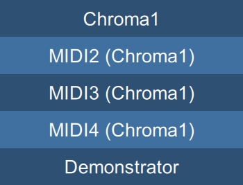

Connection button
This button shows what MIDI port the Toolkit is currently connected to, and allows you to select a different port.
Normally, you want to connect the Digital Chroma to your computer via its USB device port, which has four virtual jacks that can be used not only for the Toolkit but for recording and playback via a DAW. The names of the ports depend upon the computer’s operating system and the specific driver.
Tapping this button drops down a list of available ports. If you have a Chroma connected to a Windows machine, you may see the following:

You can tap any of the available choices, and as long as no other program already has that port open, the Toolkit will connect to it, and spend a second or so downloading information from the Chroma.
This clumsy naming is the behavior of the Windows MIDI driver, but the first four choices correspond to what the Digital Chroma calls DevA, DevB, DevC, and DevD. You can choose any of the four virtual jacks, but if you are also recording and playing MIDI with a DAW, you must choose one that the DAW isn’t using.
Connection states
The button shows the current connection state above the port name, which can be:
| Looking for | The selected port doesn’t exist | |
| Waiting for | The selected port is in use by another program | |
| Connecting to | The port has been opened but the Digital Chroma hasn’t responded yet | |
| Connected to | The Digital Chroma is connected |
How can a port be selected if it doesn’t exist? On startup, the Toolkit tries to connect to whatever it was last connected to. If the Digital Chroma has been disconnected or is turned off, then the Toolkit will remain in the “Looking for” state until the Digital Chroma is plugged in and turned on.
Demonstrator mode
The drop down list always ends with the “Demonstrator” choice. Selecting this “connects” to an internal emulator which imitates the communication functions of the instrument, although doesn’t generate any sound. This lets you explore the editor and learn its functions, even if you don’t have a Digital Chroma connected.
Any changes you make to the set of programs in the emulator don’t persist if you close the Toolkit and reopen it again, so you can mess around to your heart’s content without worrying about losing anything.